Sync invoices
Preview invoice records for a date range and reconcile them before they enter the delivery workflow.
DelOps gives distributor owners one clear operating line from billing software to delivery agent to final outcome - without adding another complicated back-office system.
Focused tools for invoices, assignments, delivery outcomes and clear reporting.
Preview invoice records for a date range and reconcile them before they enter the delivery workflow.
Select pending invoices and assign them to the right delivery agent in a few taps.
See delivered, not delivered, pending and reattempt work without chasing messages.
Understand success rate, delivered value, value at risk, agent activity and follow-up workload.
DelOps is built so Admin adds the API credential once, and the system uses it securely for invoice synchronization. Providers are added as their integrations are completed and tested.
Invoice preview, reconciliation and sync are implemented and tested.
Planned integration. Provider licensing/API requirements will be communicated before connection.
Planned for a future release.
Planned for a future release.
Office to field, with a clear handoff.
Add the API credential for your supported billing software from Admin Settings.
Choose a date range, preview the records and sync only what belongs in DelOps.
Select pending invoices and assign delivery work to an agent.
Agents deliver, and Admin sees the final result and follow-up workload.
Watch the real Admin and Agent journey: connect billing software, sync invoices, assign deliveries, complete the field run and review the final outcome.
Review today's invoices, see pending work, and move directly into the delivery workflow.

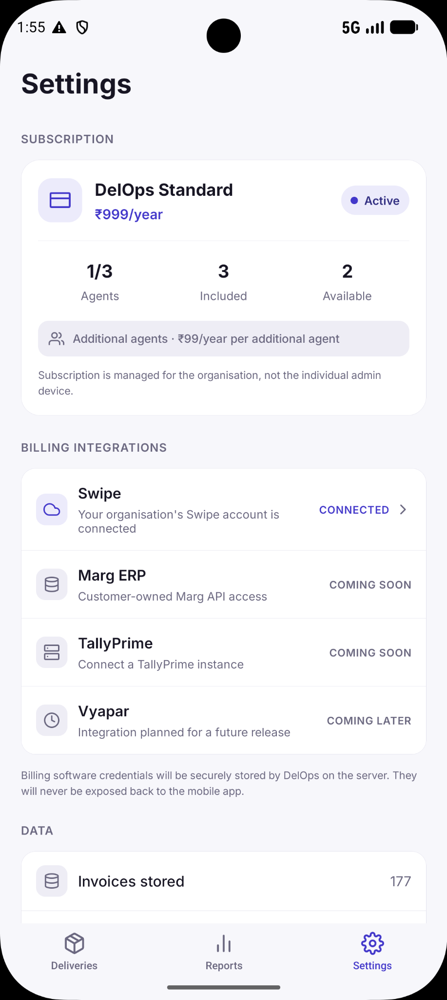

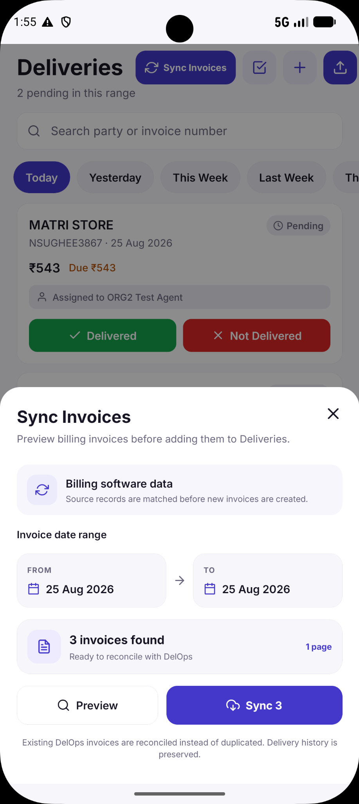

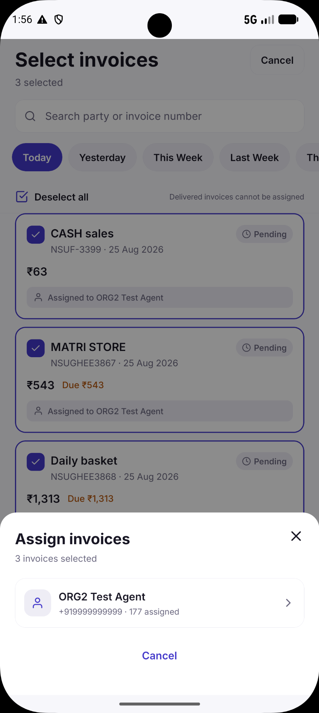

Agents see assigned work, run the route, update outcomes and close the field session - without Admin complexity.
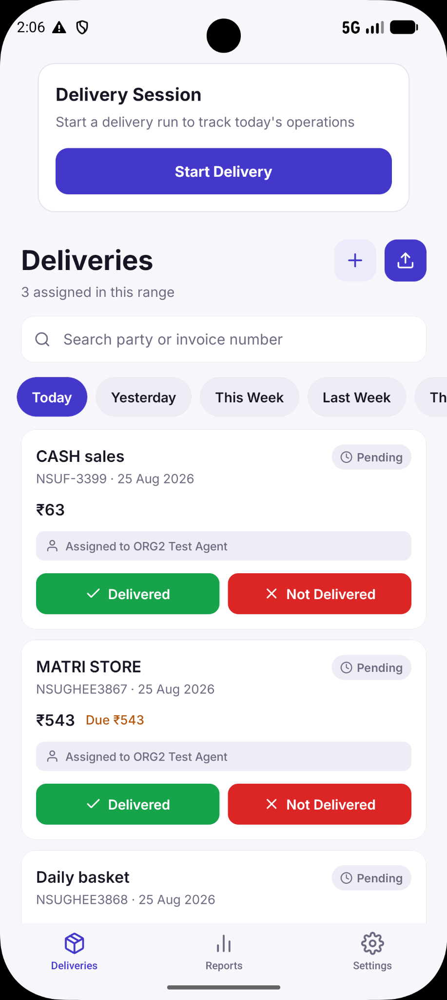
The Agent experience is focused on the work that matters in the field and feeds the final operational result back to Admin.
Know which invoices are yours before the delivery run starts.
Update each delivery with a simple field outcome.
Session activity feeds the Admin follow-up and reporting.
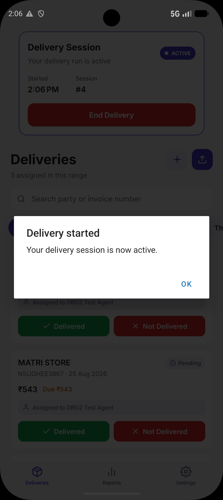
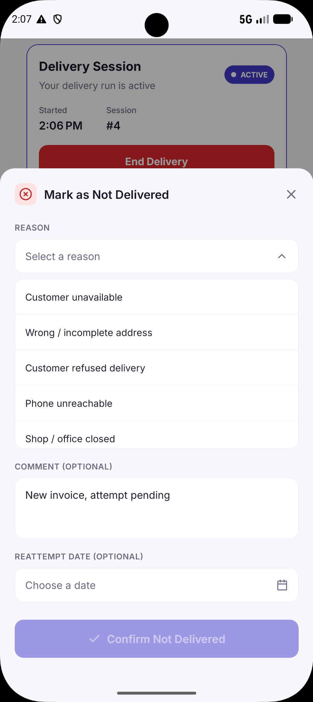
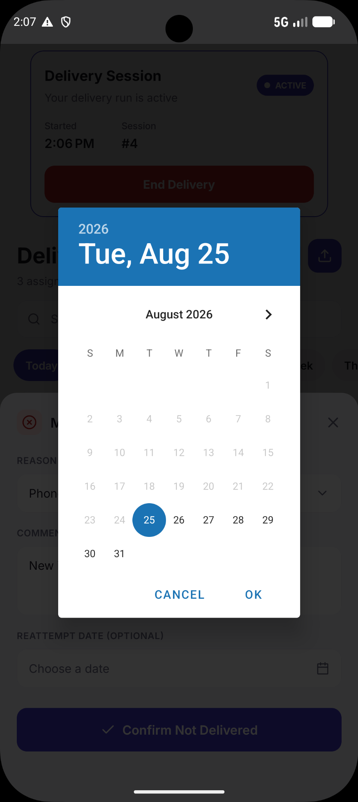
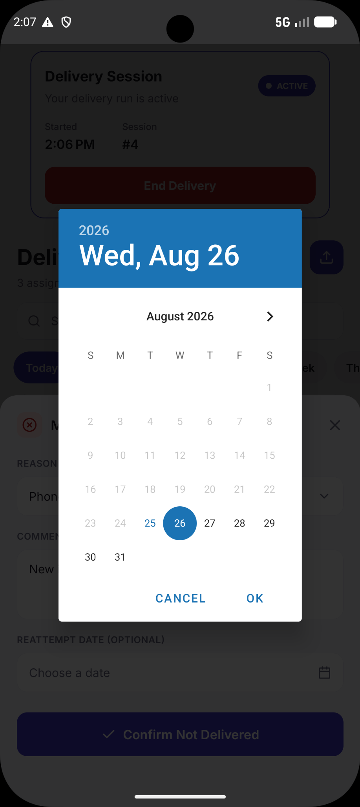
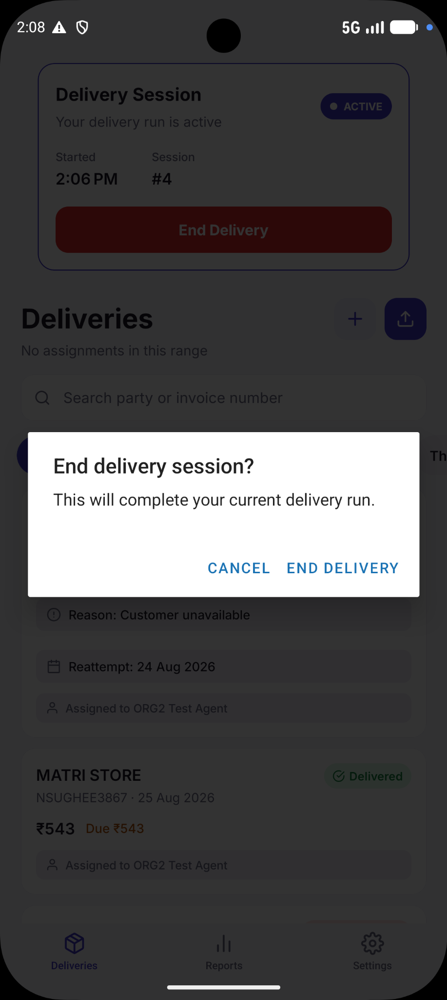
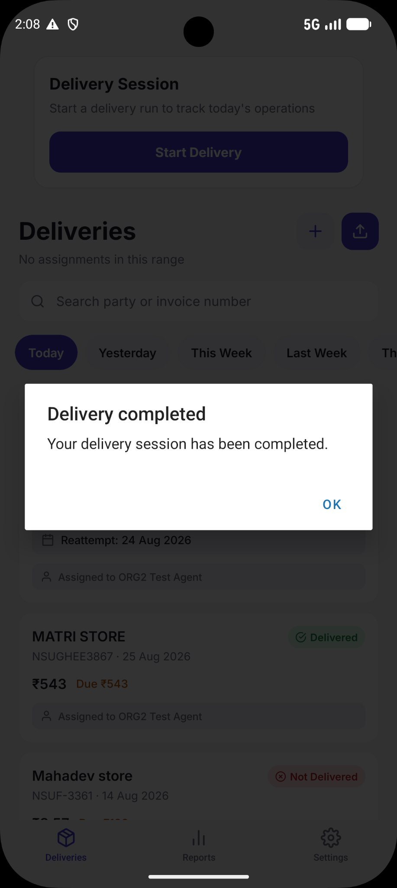
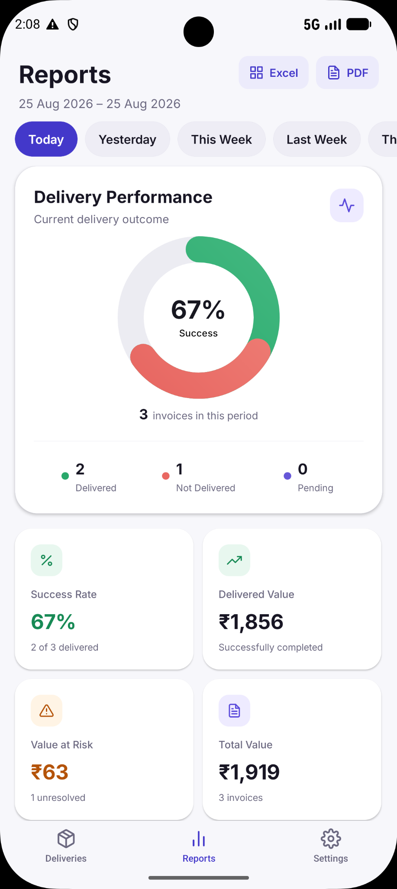
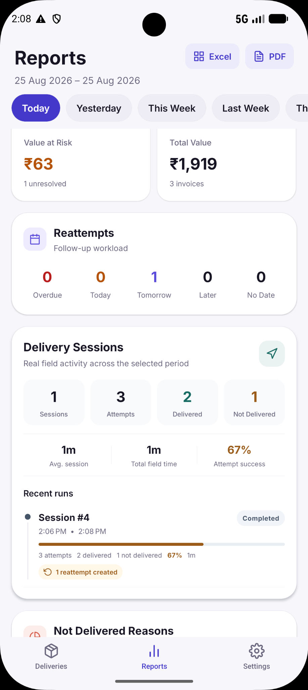
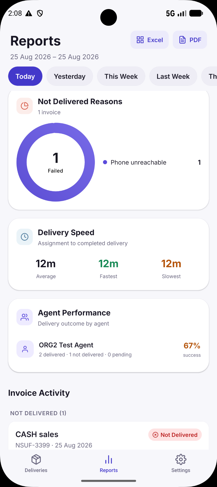
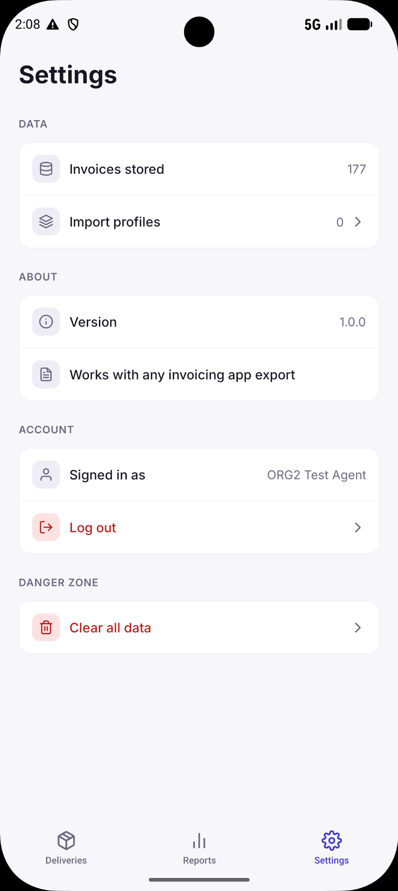
After the field team finishes, the owner sees the final outcome and follow-up workload.
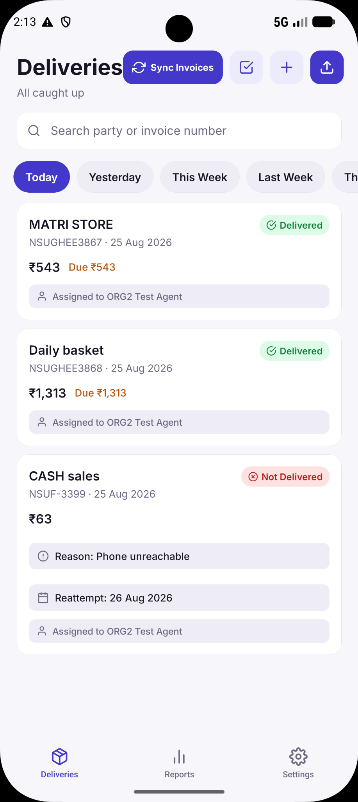
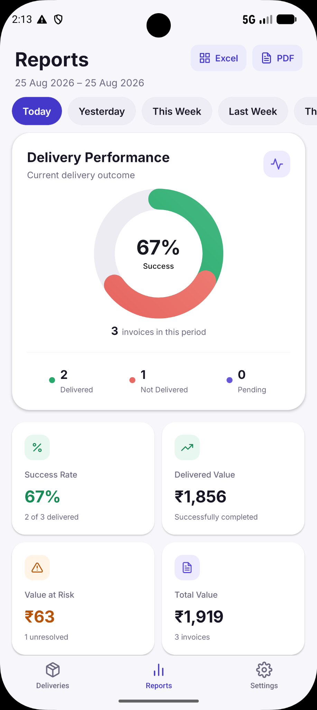

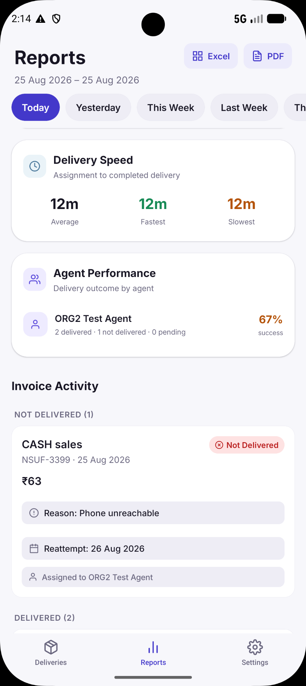

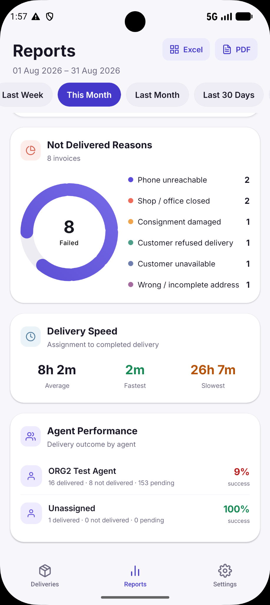
The owner sees the annual cost, included agent capacity and extra-seat price up front.
Office: connect billing software, sync and assign invoices.
Field: agents see assigned work and update delivery outcomes.
Owner: reports show the final result and follow-up workload.
Launch offer: ₹799/year. Standard annual price: ₹999/year.
Talk to DelOpsStore purchase links will be added after Android and iOS production billing setup is complete.
One platform. Complete delivery operations.